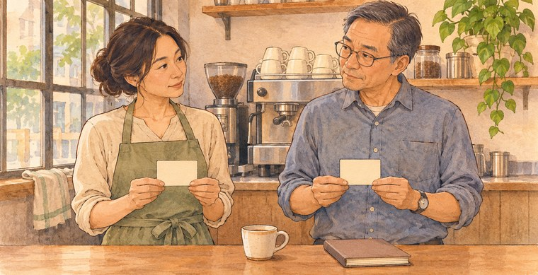

MKT-20 · 香港 · 10–15 分钟 · 会员奖赏设计 · 奖赏理解 · 兑换障碍
积了分，顾客知道怎样换奖赏吗？

奖赏要换得到，不只赚得到
2024 年 2 月 15 日，香港消费者委员会谈及奖赏供应、兑换安排和计划改条款等投诉，促请商户把资料说清楚，并照顾不熟悉数码操作的消费者。这些投诉案例不能反映问题有多普遍，也与下文的虚构咖啡店无直接关系。
课堂决策
一家虚构咖啡店正为日后新登记的顾客选择一项自愿参加的奖赏计划。现有会员的结余、兑换权利及已约定的条款另行保留，不会蒙受损失，也不会被迫转到新计划。两个方案均合法、免费加入，参加前会完整披露条款。顾客可用实体卡并请店员协助，也可选用电子介面。加入不需同意接收无关的促销讯息、额外购物或提供不必要的个人资料。
方案 A：每次到店购买合资格食品或饮品满 HK$40，可获一个印章；每人每天最多一个。集齐六个，可换一杯原价 HK$40 的标准饮品。集章卡由首次集章起计 180 日到期。方案 B：合资格净消费每 HK$1 可赚 1 分，没有每日上限；240 分可换同款饮品。每笔积分由获取当日起计 180 日到期，较早的积分先扣。不设倍数积分或会员等级。所有到期日均会显示，店员亦可解说。
两方案达标即发免费饮品券，下次到店起可用，有效期 30 日；兑换不需另购。店方已为奖赏预留预算与供应，不会突然因库存而限制兑换。规划人员预计试行期间，两方案实际奖赏成本各为 HK$6,000，并非以零售价计算。这项相同的预测有待验证，不表示每位顾客所得利益相同。两个原方案各需 HK$2,000 设置，另有 HK$4,000 设置预算。两案均未推出，亦未量度回购效果。
| 自愿参加的新计划 | 换一杯标准饮品，原价 HK$40 | 累积奖赏的有效期 |
|---|
| A：到店集章 | 六次各自合资格的到店消费 | 集章卡由首个印章起计有效 180 日 |
| B：消费储分 | 240 分；合资格消费每 HK$1 赚 1 分 | 每笔积分在赚取后有效 180 日 |
你的决定你会先试到店集章，还是按消费额储分？说明你想肯定哪种购买行为、怎样让顾客看懂还差多少以及何时到期，而不保证顾客会更常回购。
第 2 轮 · 补充资料
20 位同意参与的顾客看过两份解说稿后完成假设任务，展示次序交替。A 有 18 人能同时答对下一份奖赏的门槛和相关到期日，B 则有 11 人。B 的错误主要在 240 分门槛，以及混淆积分到期和之后饮品券的 30 日有效期。任务不会增减任何真实奖赏。这是方便招募的小组，不是随机抽样。
加费 HK$2,000，B 可在收据上加一个清楚的栏位：显示尚可用的合资格积分、距离下一杯饮品还差多少分、最早到期的日期和分数，以及获券后另外列出的饮品券到期日。条款和赚取奖赏的要求不变，仍可用实体卡和向店员求助。同一批 20 人再做一次 B 的任务，有 18 人答对两问。熟习题目或之前听过解说都可能有影响，不能当成栏位成效的受控估计。改良版 B 设置费合计 HK$4,000，A 为 HK$2,000，两者都在预算内。预测的奖赏成本仍各为 HK$6,000，实际兑换及购买仍有待观察。
你的决定你会先试较简单的集章计划，还是先付费把储分方案说清楚再试？区分目前观察到的理解程度与未来行为，并说明怎样衡量成效而不损害旧有奖赏。
奖励常来，还是奖励多买？
A 奖励六个合资格消费日，不管当天比门槛多花多少；B 奖励累计合资格消费。若累积进度仍有效，六次各消费 HK$40 两案都能赚同一杯饮品。一次合资格消费 HK$240，A 只得一个印章，B 则有 240 分，可获一张下次到店起可用的券。两种设计偏重不同购买模式；商户预测成本相同，不代表每位顾客得到的好处一样。
让顾客看清楚进度及各项限期
A 的时限按整张集章卡计，B 按每笔积分分开计。两案达标后另有一个 30 日的券限期。列明还差多少、什么会先到期，以及何时可换。不要虚增进度、悄悄提高门槛、清除旧结余，或把顾客因误解而不兑换视为成功。即使已披露条款，也可能需要解释得更清楚。
看得懂，只是中途的成果
20 人中有 18 人答对即 90%，11 人即 55%。在这批受邀者中，B 第二次有多 7 人答对，上升 35 个百分点。但不能就此说是收据栏位带来改善、所有顾客都看得懂，或日后会多买。A 较简单，设置费较低；若咖啡店想肯定不同的消费金额，解说较清楚的 B 仍可较合适。实际试行要逐步观察理解、兑换、投诉、奖赏成本及购买行为，别施压让顾客作不必要的消费。
教师提示
MKT-01 研究票价如何让乘客自行选择票种；MKT-10 研究顾客如何在目录中找到合适商品。这里关注顾客如何理解未来奖赏，以及还要累积多少才能获取。会员奖赏的原始研究表明，进度如何呈现在某些情境下可能有影响，并未保证这家咖啡店也会有相同成效。不要照搬会误导参与者的实验做法，也不要把研究百分比推及新群组。案例规则、预算及理解任务人数均为原创虚构。
第二轮
20 位同意参与的顾客看过两份解说稿后完成假设任务，展示次序交替。A 有 18 人能同时答对下一份奖赏的门槛和相关到期日，B 则有 11 人。B 的错误主要在 240 分门槛，以及混淆积分到期和之后饮品券的 30 日有效期。任务不会增减任何真实奖赏。这是方便招募的小组，不是随机抽样。
加费 HK$2,000，B 可在收据上加一个清楚的栏位：显示尚可用的合资格积分、距离下一杯饮品还差多少分、最早到期的日期和分数，以及获券后另外列出的饮品券到期日。条款和赚取奖赏的要求不变，仍可用实体卡和向店员求助。同一批 20 人再做一次 B 的任务，有 18 人答对两问。熟习题目或之前听过解说都可能有影响，不能当成栏位成效的受控估计。改良版 B 设置费合计 HK$4,000，A 为 HK$2,000，两者都在预算内。预测的奖赏成本仍各为 HK$6,000，实际兑换及购买仍有待观察。
你的决定你会先试较简单的集章计划，还是先付费把储分方案说清楚再试？区分目前观察到的理解程度与未来行为，并说明怎样衡量成效而不损害旧有奖赏。